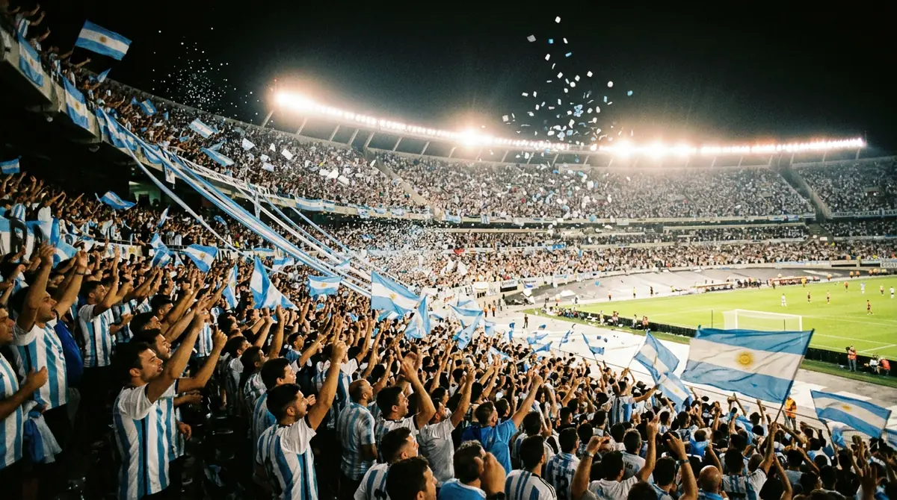
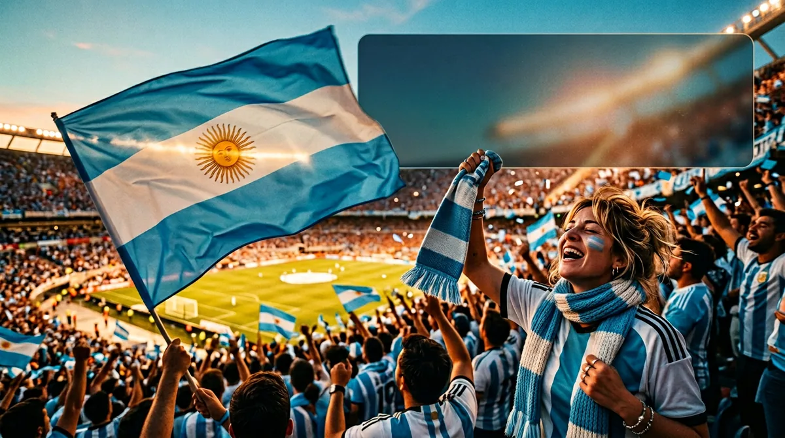
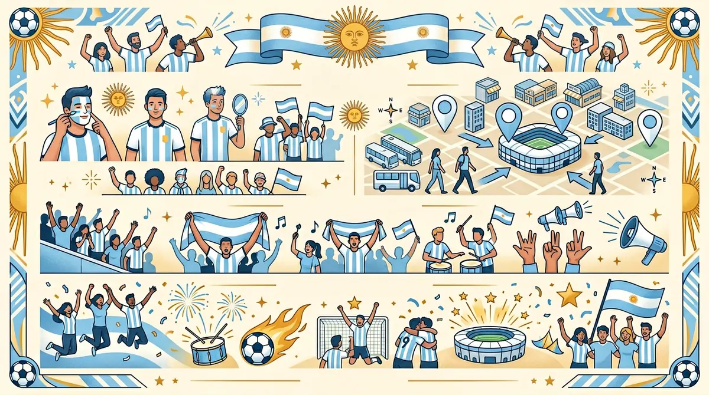
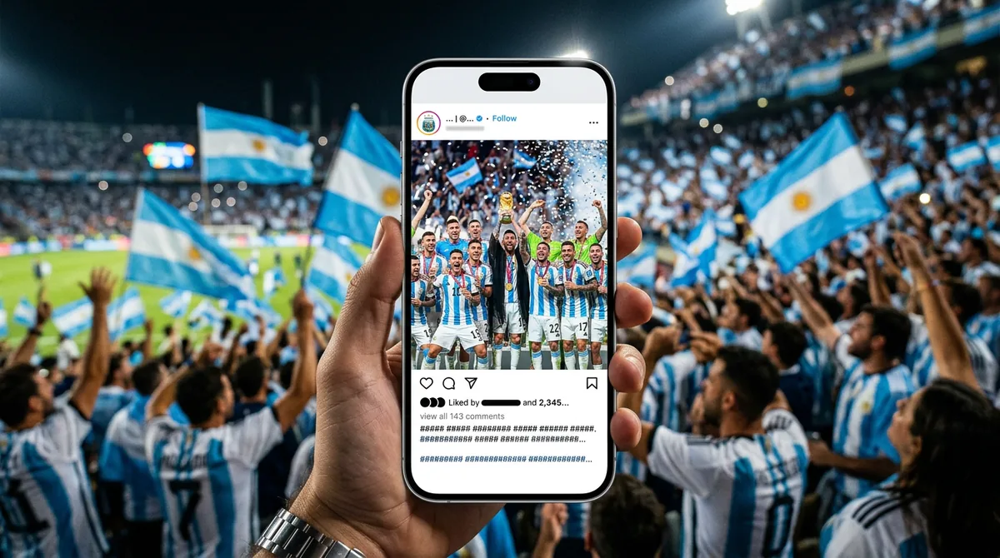

What Does Vamos Argentina Mean?
Vamos Argentina means “Let’s go Argentina” or “Come on Argentina.” In football, the phrase is shouted before kickoff, after a goal, during tense moments, and whenever fans want to push the team with energy. It is short enough for a caption, loud enough for a stadium chant, and emotional enough for a World Cup post.
The phrase is popular because it works in every football context. You can use it for Argentina matchday posts, Messi edits, World Cup reaction reels, jersey selfies, watch-party stories, and short WhatsApp statuses. It is not a formal sentence you would only see in a textbook. It is live fan language — the kind of phrase people actually shout.

Vamos Argentina Word-by-Word Translation
Here is the clean translation without overcomplicating it.
| Spanish phrase | English meaning | Use in football |
|---|---|---|
| Vamos | Let's go / come on | General cheer; works for one player or team |
| Vamos Argentina | Let's go Argentina | Most common full team cheer for Argentina fans |
| Vamos, vamos Argentina | Let's go, let's go Argentina | Chant-style repetition used in stadium singing |
| Vamos Albiceleste | Let's go Albiceleste | Fan phrase using Argentina's nickname |
| Dale Argentina | Come on Argentina / Go Argentina | Very natural Latin American-style encouragement |
| Albiceleste | White and sky blue | Nickname for Argentina because of the shirt colors |
In normal English, you can translate it as “Let’s go Argentina.” In a match situation, “Come on Argentina” also feels natural because fans are encouraging the team to attack, defend, keep believing or finish the game strongly.
Vamos, Vamos Argentina Chant Lyrics & Meaning
The common stadium-style version starts with repetition: “Vamos, vamos Argentina.” Repetition makes it easier for thousands of fans to sing together. The phrase can be used as a simple two-word chant, or as part of a longer supporter song.
Clean fan-friendly version
Spanish: Vamos, vamos Argentina. Vamos, vamos a ganar.
English: Let’s go, let’s go Argentina. Let’s go, let’s go win.
Some old supporter versions include slang words used by Argentine crowds. For a family-safe Instagram caption, keep it clean: Vamos Argentina, Vamos Albiceleste, or Dale Argentina.
What Does Albiceleste Mean?
Albiceleste means white and sky blue. It comes from the colors of Argentina’s national team shirt and flag. That is why Argentina are often called La Albiceleste. In captions, the nickname instantly makes your line more specific and more authentic.
Example: “Vamos Argentina. La Albiceleste rides again.” This is stronger than just writing “Let’s go team” because it names the identity, color and fan culture in one phrase.
Albiceleste caption formulas
Argentina Football Slogans for Fans
Searches like Argentina slogan football and Argentina football team slogan are growing because fans want short lines that feel more official than a random caption. Here are safe, original slogan-style lines you can use for posts and edits.

How to Pronounce Vamos Argentina
A simple English-friendly pronunciation is:
Say vamos with a clear “vah” sound. Say Argentina closer to “ar-hen-TEE-na” rather than a hard English “g.” You do not need a perfect accent to use the chant respectfully. Just avoid turning it into a joke or spelling it randomly.

Vamos Argentina Captions for Instagram
These captions are meaning-based, so they do not duplicate our main Argentina caption library. If you want a bigger pure caption pack, open the 140+ Argentina football captions page. Use the lines below when your post is specifically about the meaning, chant or fan emotion behind Vamos Argentina.

Vamos Argentina Meaning in Hinglish
Hinglish me simple meaning hai: “Chalo Argentina” ya “Come on Argentina.” Lekin football emotion me iska feel hota hai: “Argentina, aage badho — hum tumhare saath hain.” Indian fans ke liye ye phrase late-night matches, WhatsApp statuses aur Instagram Stories me perfect lagta hai.
When Should You Use “Vamos Argentina”?
Use Vamos Argentina when the post is about support, belief, matchday energy or Argentina fan identity. It works best when the emotion is active: kickoff is near, a goal just happened, a highlight reel is going up, or you are posting a jersey selfie before the match. It is less useful for a neutral tactical analysis post because the phrase is not analytical — it is emotional.
For Instagram Reels, put the phrase in the first line or text overlay. A short caption like “Vamos Argentina. One more night of belief.” is easier to read than a long paragraph. For Stories, keep it even shorter: “Vamos 🇦🇷” or “Vamos Albiceleste.” For a carousel, use the first slide for the emotion and the caption body for context: “Vamos Argentina means let’s go Argentina — but tonight it feels like a whole stadium inside one phrase.”
| Post type | Best phrase | Why it works |
|---|---|---|
| Pre-match story | Vamos Argentina 🇦🇷 | Short, fast and emotional before kickoff |
| Goal reaction Reel | VAMOS. The stadium felt that. | All caps mirrors crowd energy |
| Meaning explainer post | Vamos Argentina = Let’s go Argentina | Matches search intent clearly |
| Messi edit | Vamos Leo. Vamos Argentina. | Connects player and country without overdoing it |
| Indian fan status | Late night, full volume Vamos Argentina. | Local fan context, still Argentina-specific |
Common Mistakes People Make With Vamos Argentina
The biggest mistake is treating vamos like a random decoration word. It is a real Spanish phrase, so spelling and context matter. Do not write “vamous,” “vomos,” “vamas” or “vamosss” in an informational post. Extra letters are okay in a casual fan comment, but if you want your post to rank or look clean, use the correct spelling: Vamos Argentina.
The second mistake is translating it too literally as “we go Argentina.” In grammar, vamos can mean “we go,” but in football cheering it functions like “let’s go” or “come on.” Searchers want the fan meaning, not a classroom-only translation. That is why this page uses both: literal context and real matchday usage.
The third mistake is mixing unrelated tags. If your caption says Vamos Argentina but your hashtags are generic like #love #viral #instagood, the post loses relevance. Use team-specific tags and one or two World Cup tags instead. The cleaner your topic signal, the easier it is for Instagram and Google Discover-style surfaces to understand the post.
Vamos vs Forza vs Allez vs Yalla — Football Cheers Compared
Football fans around the world use short emotional words to push their teams. Spanish-speaking fans say vamos. Italian fans often say forza. French fans say allez. Arabic-speaking fans often use yalla. The exact language changes, but the emotional purpose is the same: move, fight, keep going, we are with you.
This comparison is useful because many fans search for “what does vamos mean” after hearing it in football, tennis, Formula 1 or stadium chants. In the Argentina context, the phrase becomes more specific. Vamos Argentina is not just “let’s go” in Spanish; it is a national-team support phrase connected to the blue-white shirt, Argentine supporters and World Cup culture.
| Cheer | Language/culture | Closest English meaning | Example |
|---|---|---|---|
| Vamos | Spanish | Let’s go / come on | Vamos Argentina |
| Forza | Italian | Come on / strength to | Forza Azzurri |
| Allez | French | Go / come on | Allez les Bleus |
| Yalla | Arabic | Let’s go / hurry up | Yalla, team name |
| Dale | Latin American Spanish | Come on / go for it | Dale Argentina |
Short Answers for Related Searches
This section is written for the exact questions fans type into Google. Each answer is short enough for a featured snippet and clear enough for AI search summaries.
What does Vamos Argentina mean?
Vamos Argentina means “Let’s go Argentina” or “Come on Argentina.” It is a Spanish cheer used by Argentina football fans.
What does Vamos Albiceleste mean?
Vamos Albiceleste means “Let’s go, white and sky blue.” It supports Argentina using the team nickname La Albiceleste.
What is Argentina’s football slogan?
Argentina does not have one single universal slogan used in every context, but fans commonly use phrases like “Vamos Argentina,” “Vamos Albiceleste,” “Dale Argentina,” and “La Albiceleste.”
What does La Albiceleste mean?
La Albiceleste means “the white and sky blue.” It refers to Argentina’s national football team colors.
How do you say let’s go Argentina in Spanish?
You say “Vamos Argentina.” For a more chant-like version, say “Vamos, vamos Argentina.”
Reel Hooks and Pinterest Titles for This Trend
If you are making content around the phrase, do not only post the translation. Package the meaning as a quick football culture explanation. These hooks are built for Reels, Shorts, Pinterest pins and Instagram carousels.
Pinterest pin title ideas
For Pinterest, use a vertical pin image later with a clear overlay like “Vamos Argentina Meaning” and a small subtitle “English translation + captions.” The WebP images on this page are landscape for blog speed and social previews; you can crop them into 1000×1500 pins in Canva without losing the theme.
Semantic Keywords This Page Covers
This page intentionally avoids competing with the main “Argentina football captions” article. The main keyword cluster here is meaning and explanation, not caption quantity. The semantic map is:
| Cluster | Keywords | Intent |
|---|---|---|
| Meaning | vamos argentina meaning, vamos argentina meaning in english, argentina vamos meaning | User wants translation |
| Chant | vamos argentina chant, vamos vamos argentina lyrics, argentina football chant | User heard a chant and wants context |
| Nickname | albiceleste meaning, vamos albiceleste meaning, la albiceleste meaning | User wants team nickname meaning |
| Slogan | argentina slogan football, argentina football team slogan, argentina football slogans | User wants fan phrases |
| Caption support | vamos argentina caption, argentina fan caption, argentina support caption | User wants short copy-paste lines |
Because each cluster is answered on this page, Google can treat the article as a complete explanation hub. The internal link to the larger caption pack sends pure caption seekers to the right page, reducing cannibalization instead of increasing it.
Caption Formulas Using Vamos Argentina
One reason this phrase performs well is that it can act as the first line, the final punchline, or the emotional anchor inside a longer caption. If you want a clean Instagram caption, do not simply paste the phrase alone every time. Change the formula according to the post type.
| Formula | Use it for | Example |
|---|---|---|
| Phrase + emoji | Stories and quick reactions | Vamos Argentina. 🇦🇷 |
| Phrase + identity | Fan edits and jersey posts | Vamos Argentina — Albiceleste forever. |
| Phrase + moment | Matchday Reels | Vamos Argentina. This match feels bigger than football. |
| Phrase + CTA | Engagement posts | Vamos Argentina. Comment 🇦🇷 if you believe. |
| Meaning + emotion | Educational carousel | It means “let’s go Argentina,” but fans hear “never stop believing.” |
For SEO captions, keep the first sentence exact: “Vamos Argentina means let’s go Argentina.” For Instagram engagement, keep the first sentence emotional: “Vamos Argentina. The whole timeline turns sky blue tonight.” Both are correct, but they serve different platforms.
Real Fan Scenarios: Which Phrase Should You Pick?
If Argentina are about to kick off, use Vamos Argentina. If you are posting a vintage team photo or a jersey aesthetic post, use La Albiceleste. If the post is about a dramatic late comeback, use Dale Argentina because it feels like you are pushing the team forward. If the post is specifically about Messi, use Vamos Leo and then connect it back to Argentina.
This matters because captions that match the exact moment feel more human. A generic phrase can still work, but a moment-specific phrase gets more saves and comments. A fan watching from India at 2 AM has a different caption than a fan inside a stadium. A Messi tribute has a different caption than a penalty shootout reaction. The phrase should fit the emotion.
| Scenario | Best line | Why |
|---|---|---|
| Kickoff | Vamos Argentina. The night begins. | Simple and immediate |
| Goal | VAMOS. Argentina felt that one. | All-caps energy fits the reaction |
| Penalty shootout | Hold your breath. Vamos Argentina. | Builds tension |
| Messi clip | Vamos Leo. Vamos Argentina. | Player + country connection |
| Indian watch party | Sleep can wait. Vamos Argentina. | Local context without losing team intent |
| Meaning post | Vamos Argentina means “Let’s go Argentina.” | Directly answers search intent |
Argentina Fan Language Mini Glossary
These are the phrases Argentina fans see again and again during football tournaments. Learn the meaning once and your captions will immediately sound more natural.
| Phrase | Meaning | Caption use |
|---|---|---|
| Vamos | Let’s go / come on | Fast cheer for any big moment |
| Dale | Come on / go for it | More urgent, push-forward feeling |
| Albiceleste | White and sky blue | Argentina team nickname |
| Scaloneta | Nickname for the Argentina era/team under Scaloni | Use when posting tactical/team pride content |
| Campeones | Champions | Victory posts and trophy edits |
| Vamos, carajo | Very emotional “let’s go” expression | Use carefully; stronger language than a clean family caption |
For family-safe public posts, the cleanest choices are Vamos Argentina, Vamos Albiceleste, Dale Argentina and Campeones. They carry strong football energy without needing risky slang.